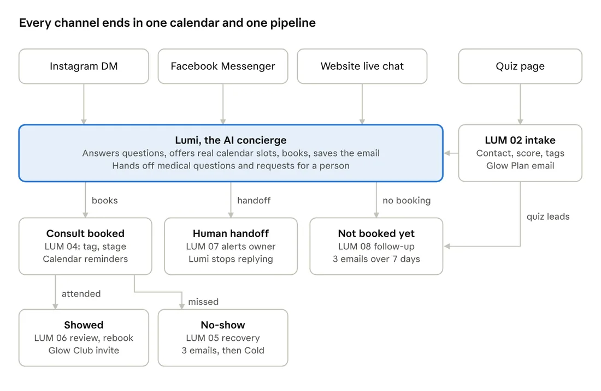
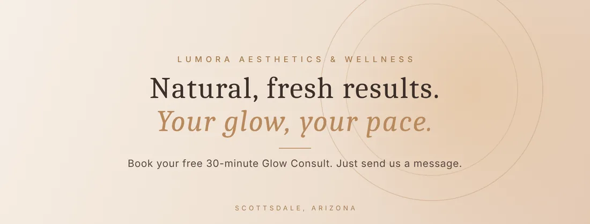
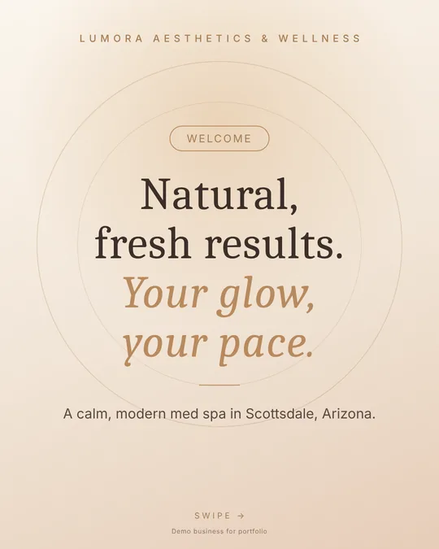
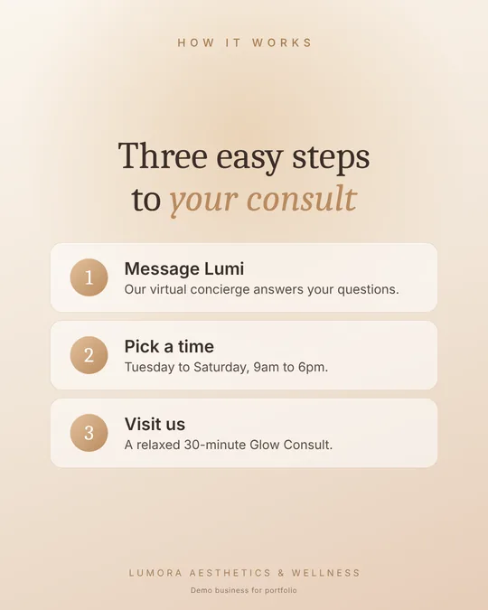
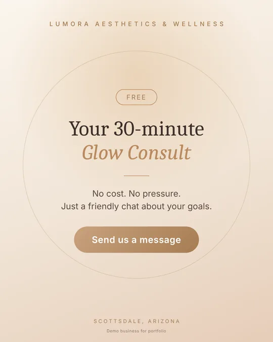
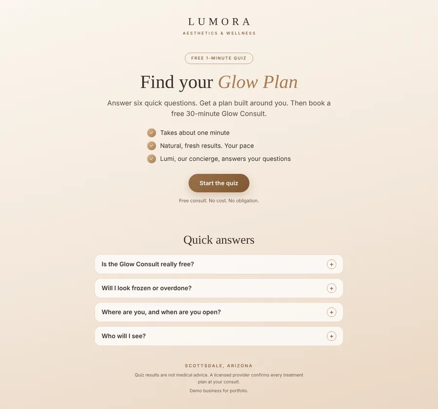
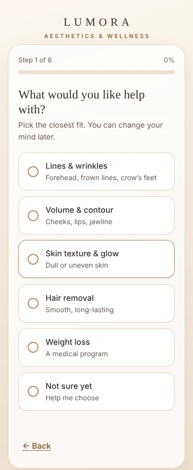
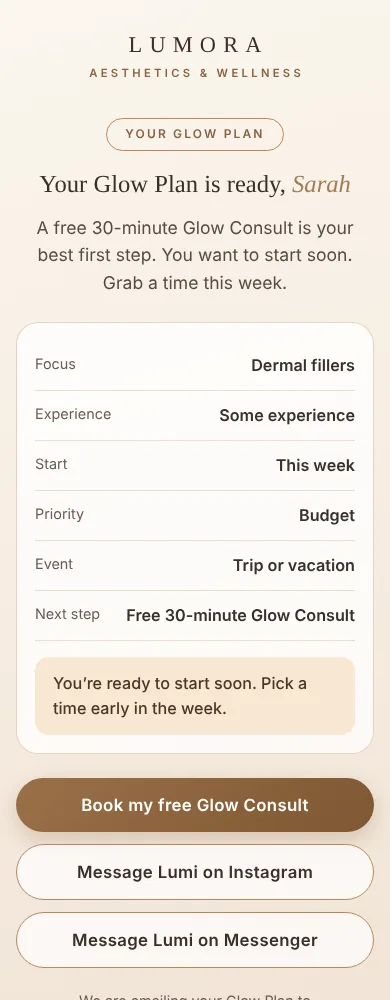

Lumora Aesthetics & Wellness
An AI concierge that answers Instagram, Messenger and web chat in seconds and books free consults on its own.
Honesty note: Lumora is a fictional business. I built this system to prove the skill. It has no real leads, no ad spend and no real clients. The business numbers on this page are targets I set for the brief. The test results are what I checked in the live system.
The problem
Lumora is a one-location med spa with a small team. Its leads message at night, and nobody answers until the next day. Four issues drove this build:
- Slow replies. Leads DM after 6pm and wait 12 to 24 hours. About 60% go cold.
- A manual front desk. The same price and safety questions take about 15 hours a week. There is no online booking.
- High no-shows. 22% of booked clients don’t show, and nothing brings them back.
- No follow-up. Leads who ask but don’t book are never contacted again.
These are the assumptions in my brief. The account had no pipeline, calendar or automation for Lumora, so everything here is a fresh build.
Walkthrough
A short recording of a lead going from a first Instagram message to a booked consult.
[ADD VIDEO: DM to booked consult, 60 to 90 seconds. Paste the YouTube embed here.]
The solution
I designed the system for the primary persona, “Busy Brittany.” She is 32 to 48, a working professional or parent, and she texts instead of calling. She wants a natural look and fears looking frozen, hidden costs and a bad provider. She messages after 6pm and drops off if she waits.
The offer is a free 30-minute Glow Consult. Leads reach Lumi, the AI concierge, three ways: a DM on Instagram or Messenger, the live chat widget, or a short quiz from the bio link. Lumi answers, finds a real time and books it. Anything medical goes to a person. One workflow handles each outcome.

What I built
1. Instagram, Messenger and the Meta setup
A branded Facebook Page and Instagram account, linked to GoHighLevel with message access on. I added four tap-to-ask FAQ buttons on both channels. A lead can tap “How much is Botox?” instead of typing, and Lumi answers. Meta sends no auto-reply of its own, so there is no double response.




[ADD IMAGE: Meta FAQ buttons on Messenger and Instagram]
2. The quiz page
“Find Your Glow Plan” is a six-question quiz in custom HTML. It scores each lead and sends the data to GoHighLevel through a webhook. The result screen shows the lead’s plan, a booking button and a message button for Instagram and Messenger. I tested it at desktop, tablet and phone widths. The live chat widget sits on the same page.
| Answer | Points |
|---|---|
| Start this week | 40 |
| Start this month | 25 |
| Just exploring | 5 |
| Event in the next 30 days | 25 |
| Has had treatments before | 10 |
| Wants quick results, or an expert provider | 10 each |
A score of 60 or more is Hot. 30 to 59 is Warm. Under 30 is Cold.



[ADD LINK: live quiz page URL]
3. Lumi, the Conversation AI agent
Lumi is a prompt-based agent in auto-pilot on Instagram, Messenger and live chat. Her job is narrow: answer simple questions, book the consult and save the lead’s email. She hands off anything medical. I wrote the prompt, the 15-entry FAQ and the handoff rules.
| Part | What it does |
|---|---|
| Voice | Warm and calm. Short sentences, one question at a time. No hype words, no pressure |
| Booking | Offers two real slots from the calendar, books, confirms the details. Lead can reschedule. Cancel goes to a person |
| Contact updates | Saves treatment interest, past experience, start timeline, what matters most and any upcoming event, plus the email |
| Knowledge base | Price ranges, hours, location, what a visit is like, who the lead will see |
| Handoff | Six scenarios: wants a person, medical or safety question, complaint or refund, unlisted treatment or policy, lack of information, and an unresolved chat |
| Hard rules | No medical advice. No result promises. No invented prices or availability. Never claims to be human |
[ADD IMAGE: Lumi prompt and actions panel] [ADD IMAGE: a real Messenger chat, first message to booking] [ADD IMAGE: handoff chat, pregnancy question]
4. Calendar, pipeline, fields and tags
A 30-minute “Free Glow Consult” calendar, Tuesday to Saturday, 9am to 6pm Arizona time. An eight-stage pipeline: New Lead, Engaged with Lumi, Consult Booked, Showed, Client, No-Show Recovery, Human Needed and Cold. Nine custom fields hold the quiz and chat answers. Thirteen tags with a lum- prefix keep Lumora apart from the other builds in the account.
[ADD IMAGE: pipeline] [ADD IMAGE: a contact record with the Lumora fields and tags] [ADD IMAGE: calendar availability]
5. Automation workflows
Seven workflows run the rest. The calendar’s own notifications send the confirmation and reminder emails, so the workflows only tag, move and alert.
| Workflow | Trigger | What it does | Goal |
|---|---|---|---|
| LUM 01: DM Lead Intake | Customer replies on Facebook or Instagram | Tags the lead, creates an opportunity, flags a missing email | Moves to Engaged with Lumi |
| LUM 02: Quiz Lead Intake | Quiz webhook | Creates the contact, maps 8 fields, tags Hot, Warm or Cold, sends the Glow Plan email, alerts on Hot leads | Booking |
| LUM 04: Booking Logic | Appointment confirmed | Tags the lead, moves to Consult Booked, alerts the owner | Show-up |
| LUM 05: No-Show Recovery | Appointment marked No Show | Three emails at 15 minutes, 1 day and 3 days, then Cold | Rebooked |
| LUM 06: Showed, Review and Rebook | Appointment marked Showed | Thank-you, review request, staff task, rebook email, Glow Club invite for clients | Rebooked or client |
| LUM 07: Human Handoff Alert | Lumi hands off | Moves to Human Needed, emails the owner, creates a 1-hour task | Reply sent |
| LUM 08: Unbooked Lead Follow-up | Lead engaged but not booked | Three emails over 7 days, then Cold | Booking |
[ADD IMAGE: LUM 02 canvas] [ADD IMAGE: LUM 05 canvas] [ADD IMAGE: workflow list, all published]
6. Email copy
Every email is in Lumora’s voice: short, warm, one clear next step. Examples: “Your Glow Plan is ready,” “We missed you today,” “Want us to hold a time?” and “Would you share a quick review?”
[ADD IMAGE: Glow Plan email] [ADD IMAGE: booking confirmation email]
How I tested it
I tested with real chats on Messenger and Instagram. After each test I read the contact’s fields, tags, pipeline stage and calendar booking directly in GoHighLevel. I deleted every test contact afterward.
| Test | Result |
|---|---|
| “How much is Botox?” on Messenger | Correct price and a first question, in seconds |
| First message to booking | Real slots offered, booked in about 5 messages, email saved on the contact |
| Pregnancy question | Handed off with no medical advice |
| “Can I talk to a real person?” | Handed off with the correct hours |
| A treatment not in the price list | Handed off, no invented price |
| Quiz submission | Contact created, 8 fields mapped, Hot tag, opportunity in New Lead, both emails arrived |
| Booked, No Show, then Showed | Tags and pipeline stages moved correctly each time |
Problems I found and fixed
| Problem | Fix |
|---|---|
| No Saturday slots | Added Saturday to the availability |
| Lumi offered times in Philippine time | Set the account timezone to Arizona, then rechecked slots and emails |
| A handoff message said “within 24 hours” | The built-in message can’t be edited. I replaced it with a custom scenario and the real hours |
| A price not in the list didn’t hand off | Added a custom “unlisted treatment or policy” scenario |
| Wrong value saved in one contact field | Tightened the field instructions and examples |
| A booking tag came back after the visit | Set the booking trigger to Confirmed on the Lumora calendar. Retested through booked, no-show and showed |
| Another build in the same account tagged a Lumora lead | Found the overlap. The fix is a calendar filter on that trigger, or a separate sub-account [ADD STATUS when resolved] |
Designed targets
Honesty note: These are targets from my brief, not results. Lumora has no live traffic.
| Metric | Assumed baseline | Target |
|---|---|---|
| Lead response time | 12+ hours | Under 1 minute |
| Lead to booked consult | 8% | 25% |
| Show-up rate | 78% | 90% |
| New consults a month | 18 | 50 |
| Admin hours saved | 0 | 12 a week |
| Cost per booked consult | About $140 | Under $50 |
My decisions and why
- Direct-message first. There is no phone number in the account, and the audience lives on Instagram. The DM is where the lead already is, so the chat starts there and stays there.
- Email for reminders. Meta only lets a bot reply within 24 hours of the lead’s last message. So Lumi must capture an email in the chat, and every reminder goes by email.
- A narrow AI. Lumi answers, qualifies and books. She never gives medical advice. A med spa can’t afford a bot that guesses.
- A free consult as the entry offer. It removes the barrier to a first visit for a worried first-timer, and gives every follow-up a clear next step.
- Calendar emails plus workflows. The calendar sends confirmations and reminders. The workflows handle tags, stages and alerts. That avoids duplicate emails.
- A
lum-prefix on every tag and field. The account holds other builds. The prefix keeps them apart.
How I used AI
Honesty note: AI sped up drafting and building. I made the decisions and tested every path.
- Lumi is the product. The concierge itself is Conversation AI. I wrote its rules and tested its edge cases.
- Drafting with Claude. I used Claude to draft the prompt, the FAQ, the email copy, the quiz page and the workflow specs. I reviewed and edited every piece.
- A browser agent for repetitive building. Claude in Chrome built some of the workflows from my specs, as drafts. I reviewed each one before I published it.
Limits and next steps
- Practice project. A fictional client, with no real leads and no ad spend.
- No SMS. The account has no phone number, so the system runs on DMs, live chat and email.
- Still to test: a real DM through the intake and handoff-alert workflows, and several days of the follow-up sequence.
- Next: a separate sub-account for Lumora, a missed-call text-back once there is a number, and click-to-message ads with a real client to measure cost per booked consult.